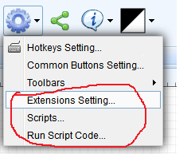
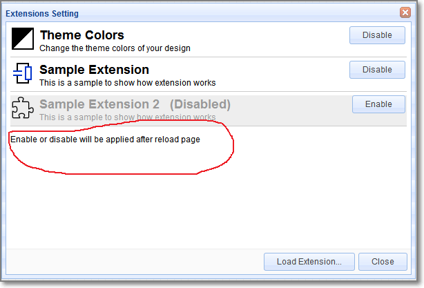
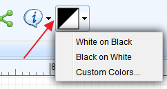
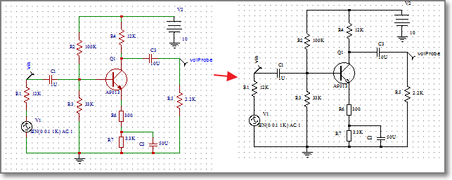
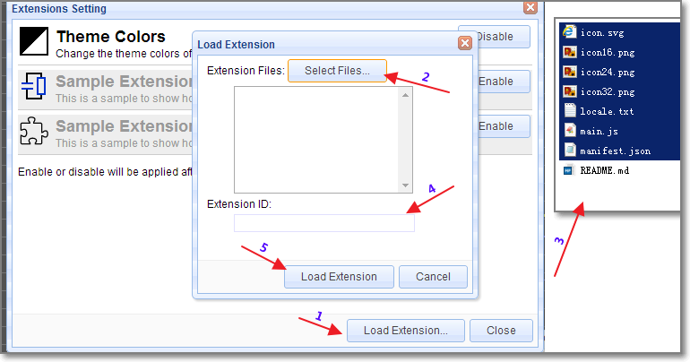
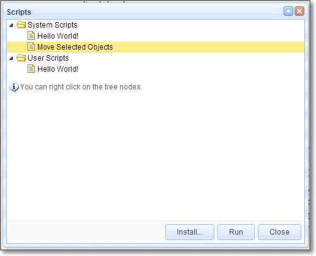
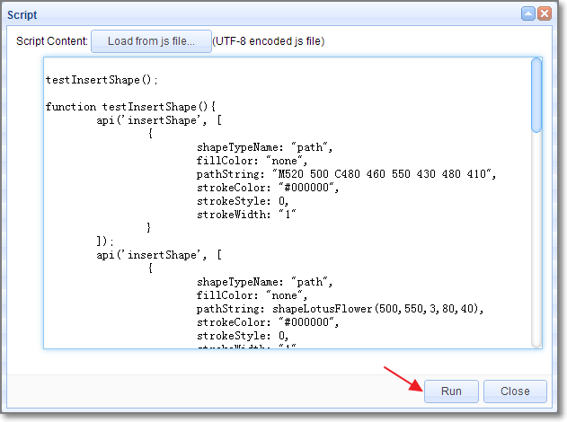
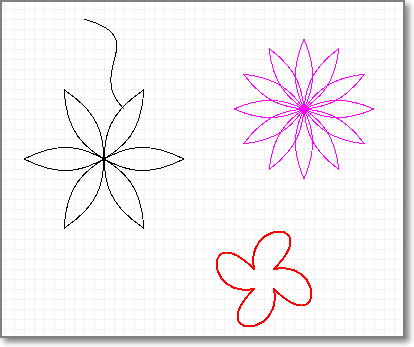
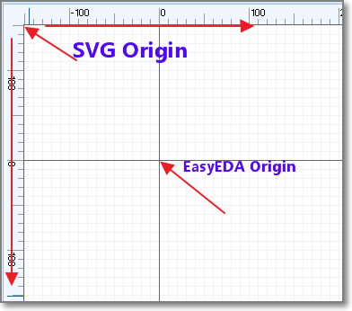

#EasyEDA API Plug Before reading this capture, please check Open EasyEDA File Format first. ##Why Need API After route the PCB, you found out that you need to enlarge all tracks size a bit little, How? After route the PCB, you found out that all Vias' hole size is too small, How to fix this? How to create a board outline using code? EasyEDA API will let you control your designs in an easy way. ##How to use API
How to find the plug entance

Extensions Setting
You can enable or disable the default extensions, after enable, please reload the EasyEDA editor. We will give you a file about how to create an extensions soon. 
If you enable the Theme Colors Extension, you will find a button on the tool bar like bellow image  if you click the Black On White, you will find your schematic changes like bellow image, this is useful when you would like to print your design on a paper. . You can check our github codes of this API via https://github.com/dillonHe/EasyEDA-Documents/tree/master/API/example/theme, check the manifest.json and main.js out, you will find out how to create an extension.
How to install an extension
- Click the Load Extension button
- Click the select file button
- Select All the files.
- Type a name
- Click the load button.
- Close EasyEDA editor and open it again. .
Scripts
If you just need some simple functions, you don't need to create an extension. You just need to create a single Javascipt file and keep it in this list. .
- You can select the
Hello World, then click theRunbutton. - You can select some items, then try
Move Selected Objects.
Run Script code
In some case, you just need to run the function one time, such as create a user define board outline in codes, changing the Track width, change the hole size etc. You can use this way.
.
**example 1 Art **
You can open an empty schematic and copy this example javascript codes to the text box to run a test. After clicking the Run button, you will see bellow art image.

**example 2 Change track width and via hole size ** You can open a PCB and copy this example javascript codes to the text box to run a test. After that, All tracks will be 10mil. ##EasyEDA Coordinate System EasyEDA's editor is based SVG, SVG viewport,(Coordinates increase left-to-right and top-to-bottom, the same as EasyEDA ). But SVG's origin is fixed at the left top corn, and EasyEDA's origin can be modified at the any place. . Be careful this, they are different from Cartesian coordinate system ##Unit There are two kinds of unit in our editor, SVG Canvas unit and real world EasyEDA unit. SVG Canvas unit is Pixel. The real world EasyEDA unit in schematic is also Pixel, but in PCB, there are mm, mil and inch. We use bellow map to convert Canvas to real world.
-
1 pixel = 10 mil
-
1 pixel = 0.254mm
-
1 pixel = 0.01inch There are API for these convert.
//mm2pixel: convert 10mm to pixel var result = api('unitConvert', {type:'mm2pixel',value:10});
//mil2pixel: convert 10mil to pixel
var result = api('unitConvert', {type:'mil2pixel',value:10});
There are other convert method, such as inch2pixel, pixel2mm, pixel2mil and pixel2inch.
All EasyEDA's value is based pixel, if you can keep in mind that 1 pixel equal 10mil or 0.254 mm, you don't need to use any convert function. For example, if you want to change a Track to 20mil, so you just need to use 2.
##API List ###Get EasyEDA Source
-
get EasyEDA JSON objects, type is
json, you can check PCB Json object out to know more.var result = api('getSource', {type:'json'}); -
get EasyEDA compress string, EasyEDA save this string to our database, it is a bit little hard to read and understand, but it is small in size. EasyEDA save this string to our database.
var result = api('getSource', {type:'compress'}); -
Get SVG string var result = api('getSource', {type:'svg'});
Check the Get EasyEDA source example codes. ###Apply Source After you can use your codes to hack EasyEDA's source, then you need to apply the source to EasyEDA's editor. You can
-
Apply as compress string
//will open a new editor and convert compressStr to EasyEDA file. api('applySource', {source:'compressStr', createNew: true}); -
Apply as Json object.
//will modify the active file and convert json object to EasyEDA file. api('applySource', {source: json, createNew: !true});
Check the Apply Source example codes. ###Get Shape If you want to get an EasyEDA json object by id, you can try to use bellow code.
var obj = api('getShape', {id:'gge13'})
###Delete Shapes Removing shapes by follow code
###Update Shape If you want to modify an EasyEDA object, you can use this API.
//Change the net to GND and the shape to ELLIPSE
api('updateShape', {
"shapeType": "PAD",
"jsonCache": {
"gId": "gge5",
"net": "GND"
"shape": "ELLIPSE"
});
shapeType and gId are must provided.
- Schematic
shapeTypeschlib,rect,polyline,polygon,wire,bus,image,circle,ellipse,line,path,arc,annotation,junction,netlabel,busentry,arrowhead,noconnectflag,pin,netflag - PCB
shapeTypeFOOTPRINT,TRACK,COPPERAREA,SOLIDREGION,RECT,CIRCLE,TEXT,ARC,DIMENSION,PAD,VIA,HOLE
###Create Shape If you want to create EasyEDA shape by codes, you can try. We will provide more information about this API soon, now we just provide examples. You will find out how to do. /** with shortUrl * @example * api('createShape', {shapeType:'schlib', shortUrl:'nxlVIGgQO', from:'system', title:'556_DIL14', x:400, y:300}); * api('createShape', {shapeType:'FOOTPRINT', shortUrl:'RrkewO60i', from:'system', title:'ARDUINO_PRO_MINI', x:400, y:300}); / /* with jsonCache object * @example * api('createShape', { * "shapeType": "PAD", * "jsonCache": { * "gId": "gge5", * "layerid": "11", * "shape": "ELLIPSE", * "x": 382, * "y": 208, * "net": "", * "width": 6, * "height": 6, * "number": "1", * "holeR": 1.8, * "pointArr": [], * "rotation": "0" * } * }); * * @example * api('createShape', { * "shapeType": "polygon", * "stroke": "#000000", * "stroke-width": "1", * "stroke-style": "dashed", * "fill": "none", * "points": [ * {"x": 390, "y": 580}, * {"x": 450, "y": 450}, * {"x": 520, "y": 580}, * {"x": 610, "y": 490} * ] * }); * * @example * api('createShape', { * "shapeType": "arrowhead", * "x": 300, * "y": 300, * "color": "#339933", * "size": "3", * "rotation": 0 * }); * * @example * var ts = ["no_connect_flag", "arrowhead", "busentry", "netLabel_GNd", "netLabel_GnD", "netLabel_gnD", "netLabel_Bar", "netLabel_VEE", "netLabel_-5V", "netLabel_+5V", "netLabel_VCC", "netLabel_volProbe", "netLabel_netPort", "netLabel_text", "pin", "annotation"]; * for(var i=0;i<ts.length;i++){ * api('createShape', { * "shapeType": ts[i], * "x": 300 + i%5*50, * "y": 300 + (i/5|0)*50 * }); * } / / with cached or pre-defined libs * @example * api('createShape', {"shapeType": "pcblib", from:'GeneralPackages', title:'C0402', x:400, y:300}); * @example * api('createShape', {"shapeType": "schlib", from:'EasyEDALibs', title:'HDR2X2', x:400, y:300}); * / / * @example 4 * api('createShape', { * "shapeType": "schlib", * "gId": "gge6", * "head": {}, * "itemOrder": [], * "annotation": { * "gge8": api('createShape', 'annotation', {}), * "gge9": api('createShape', 'annotation', {}) * }, * "pin": { * "gge11": api('createShape', 'pin', {}), * "gge14": api('createShape', 'pin', {}) * }, * "polyline": { * "gge10": api('createShape', 'polyline', {}), * "gge12": api('createShape', 'polyline', {}) * } * }); * * @example 5 * api('createShape', { * "shapeType": "schlib", * "gId": "gge6", * "head": {}, * "children": [ * api('createShape', 'polyline', {}), * api('createShape', 'polyline', {}), * api('createShape', 'pin', {}), * api('createShape', 'pin', {}), * api('createShape', 'annotation', {}), * api('createShape', 'annotation', {}) * ] * }); * * @example 6 * api('createShape', { * "shapeType": "schlib", * "gId": "gge6", * "head": {}, * "children": api('createShape', [ * ['polyline', {}], * ['polyline', {}], * ['pin', {}], * ['pin', {}], * ['annotation', {}], * ['annotation', {}] * ]) * }); **/
UI
If you want to create an extension, not just a run one time script, maybe need toolbar buttoon. You can check the example before you read. ####Create Toolbar Button
//@example create a button
api('createToolbarButton', {
icon:'extensions/theme/icon.svg',
title:'Theme Colors...',
fordoctype:'sch,schlib',
cmd:"extension-theme-setting"
});
* @example toolbar with menu
* api('createToolbarButton', {
* icon:'extensions/theme/icon.svg',
* title:'Theme Colors...',
* fordoctype:'sch,schlib',
* "menu" : [
* {"text":"White on Black", "cmd":"extension-theme-WhiteOnBlack"},
* {"text":"Black on White", "cmd":"extension-theme-BlackOnWhite"},
* {"text":"Custom Colors...", "cmd":"extension-theme-setting"}
* ]
* });
####Create Extension Menu
/**
* @example
* api('createExtensionMenu', [
* {
* "text":"Theme Colors...",
* "fordoctype": "sch,schlib",
* "cmd": "extension-theme-white"
* }
* ]);
*/
###Create Dialog
check the example
###Command List
####Clone // clone gge2 gge3 and return their new ids. var newIds = api('clone', {ids:["gge2","gge3"]}) ####Delete api('delete', {ids:["gge2","gge3"]}); ####Rotate // rotate ids to 90 degree api('rotate', {ids:["gge2","gge3"],degree:90}); ####Rotate Left //anticlockwise api('rotate_left', {ids:["gge2","gge3"]}); ####Rotate Right
//clockwise
api('rotate_right', {ids:["gge2","gge3"]});
####Fliph api('fliph', {ids:["gge2","gge3"]}); ####Flipv api('flipv', {ids:["gge2","gge3"]}); ####Align Left api('align_left', {ids:["gge2","gge3"]}); ####Align Right api('align_right', {ids:["gge2","gge3"]}); ####Align Top api('align_top', {ids:["gge2","gge3"]}); ####Align Bottom api('align_bottom', {ids:["gge2","gge3"]}); ###Selection Change or get selection states of EasyEDA objects in editor. ####Select
// gge2 and gge3 will be marked as selected.
api('select', {ids:["gge2","gge3"]});
####Select None //no objects will be selected. api('selectNone'); ####Get Selected Ids var ids = api('getSelectedIds'); ###Move You can use Update Shape to change the shapes position, but the Move method is better in this case. ####Move Objects Move shapes in relative coordinates, like move the shapes in arrow keys.
//Move gge2 and gge3 from left to right in 20pixel or 200mil step
//from top to bottom in 20pixel or 200mil step.
api('moveObjs', {objs:[{gId:"gge2"},{gId:"gge3"}], addX: 20, addY: 20});
//Move gge2 and gge3 from right to left in 20pixel or 200mil step
api('moveObjs', {objs:["gge2","gge3"], addX:-20});
//Move selected objects from left to right in 20pixel or 200mil step
api('moveObjs', {addX:20});
####Move Objects To
How to move a VIA or junction to position {x:'10mil', y:'10mil'} ?, Move shapes to absolute coordinates.
//Move gge2 and gge3 to Canvas postion 20,20, the real coordinates are dedpend the origin.
api('moveObjsTo', {objs:[{gId:"gge2"},{gId:"gge3"}], x:20, y:20});
//move gge2 and gge3 to 10mm, 10mm coordinates
api('moveObjsTo', {objs:["gge2","gge3"], x: api('coordConvert', {type:'real2canvas',x: '10mm'}), y: api('coordConvert', {type:'real2canvas',y: '10mm'})});
//Move selected objects to Canvas postion 20,20, the real coordinates are dedpend the origin.
api('moveObjsTo', {x:20, y:20});
It is very easy to understand to move a PAD, VIA, Junction to absolution coordinates. But what are the effects of moving TRACK, FOOTPRINT, netlabel to some where. Just try to play the codes, you will find out the regular pattern.
###SetOriginXY EasyEDA's canvas origin is 0,0, you can't change it. But the real coordinates can be mapped to any where. //set the real origin point to canvas x = 400, y = 300. X,Y is pixel all the time. var result = api('setOriginXY', {x:400,y:300}); ###Coordinate Convert You can use mm or mil or inch as units, but when you apply the Parameters to SVG graph, you must use coordinate convert.
//convert the canvas x 400 to real postion, the value is depent your units and origin point.
var result = api('coordConvert', {type:'canvas2real',x:400})
//the default units is your canvas units, but you can add a units like 300mm. if your PCB's units is mil, then you will get the canvas coordinate 400mil,300mm.
var result = api('coordConvert', {type:'real2canvas',x:400,y:'300mm'});
If you set the origin to 0,0. It is very easy to map the coordinate in your mind, you don't need to use API to convert. the canvas coordinate 100,100 equal the real coordinate 1000mil, 1000mil or 1inch, 1inch or 393.7mm, 393.7mm
###Value Convert How to set the pad's hole size to 20mm? How to set the Track width to 20mil?
//the default units is your canvas units, but you can add a units like mm, mil, inch, even pixel.
var result = api('valConvert', {type:'real2canvas',val:400});
result = api('valConvert', {type:'real2canvas',val:'400mm'})
//convert the 400 pixel to real value, the value is depent your units , if the unit is mil, the result should be 4000
//result = api('valConvert', {type:'canvas2real',val:400})
If you can keep in mind 1pixel in canvas equal 10mil, so you don't need this API, you can do it in raw way. For example, If you want to update the track size to 20mil, you can do.
api('updateShape', {
"shapeType": "TRACK",
"jsonCache": {
"gId": "gge5",
"strokeWidth": 2
}
});
Or
api('updateShape', {
"shapeType": "TRACK",
"jsonCache": {
"gId": "gge5",
"strokeWidth": api('valConvert', {type:'real2canvas',val:'20mil'})
}
});
###Get SVG Arc Path SVG Arc path Parameter is very complex, We provide a API to convert human read ARC parameter to SVG path.
var result = api('getSvgArcPathByCRA', {cx:0, cy:0, rx:90, ry:90, startAngle:0.1, endAngle:0.7, sweepFlag:1});
result should be M89.55037487502231 8.985007498214534A90 90 0 0 1 68.83579685560396 57.97959185139219
##Examples check Github example
Enjoy it, if you have any questions, do let us know.